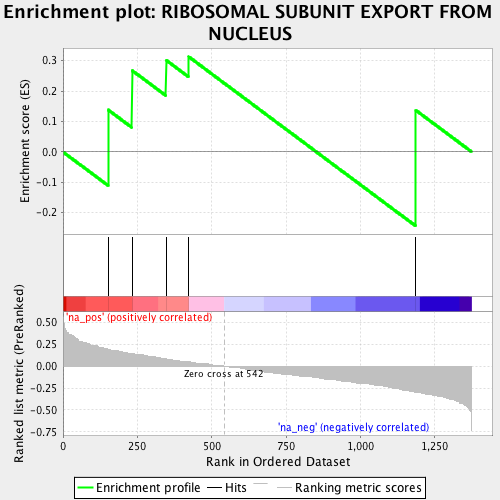
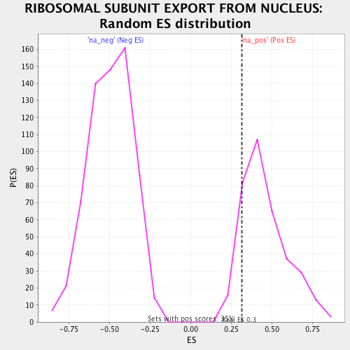

| | | Dataset | ranked_by_GAP.rnk |
| Phenotype | NoPhenotypeAvailable |
| Upregulated in class | na_pos |
| GeneSet | RIBOSOMAL SUBUNIT EXPORT FROM NUCLEUS |
| Enrichment Score (ES) | 0.31272003 |
| Normalized Enrichment Score (NES) | 0.6889213 |
| Nominal p-value | 0.8693182 |
| FDR q-value | 0.9521768 |
| FWER p-Value | 1.0 |
Table: GSEA Results Summary

Fig 1: Enrichment plot: RIBOSOMAL SUBUNIT EXPORT FROM NUCLEUS
Profile of the Running ES Score & Positions of GeneSet Members on the Rank Ordered List
| PROBE | GENE SYMBOL | GENE_TITLE | RANK IN GENE LIST | RANK METRIC SCORE | RUNNING ES | CORE ENRICHMENT | | 1 | ARX1 | | | 152 | 0.194 | 0.1378 | Yes |
| 2 | SLX9 | | | 232 | 0.146 | 0.2679 | Yes |
| 3 | YAR1 | | | 347 | 0.091 | 0.3015 | Yes |
| 4 | RSP5 | | | 423 | 0.051 | 0.3127 | Yes |
| 5 | JJJ1 | | | 1187 | -0.296 | 0.1365 | No |
Table: GSEA details [plain text format]

Fig 2: RIBOSOMAL SUBUNIT EXPORT FROM NUCLEUS: Random ES distribution
Gene set null distribution of ES for RIBOSOMAL SUBUNIT EXPORT FROM NUCLEUS